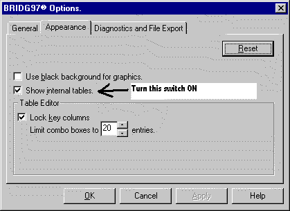
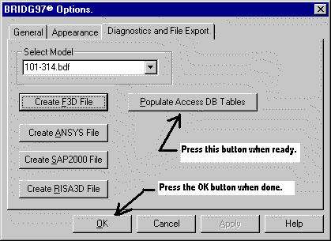

Step 5B - The internal tables and ACCESS interface
BRIDG uses the SQLITE3 database format for its database files. Typically, the database files created by the program are not saved and only used during the run. If you wish to review these tables or use them in an other application, then you need to instruct BRIDG to not delete the database file on program exit, and tell it to populate the tables with internal values if you need access to this information as well.
During program operation, the SQLITE3 database files are only used for storage of the input data and other values that are not access time critical. Because databases are much to slow to be used during the operation of the program, the program uses a proprietary internal memory resident database system that mirrors the database tables in the SQLITE3 file. The program can be instructed to populate the SQLITE3 database (i.e. copy the memory data into the database file’s tables.) upon demand. All the values that have been computed up to the time the populate command is given are copied to the SQLITE3 database.
You do not need a copy of an SQL database viewer, e.g., Microsoft’s ACCESS, to view the SQLITE3 database file. The editor window in the program is a view into that file. To view the internal tables, turn on the internal table view switch as described below.
To view and save the SQLITE3 database do the following.
The database file name is always ~bridg##.mdb, where ## is a number
that is incremented from 01 up until a unique unused file name is found.
The directory is the temporary file directory that is specified in the
options panels illustrated below. A future option will be to save this file
by the broidge file name and put it in the bridge file’s directory.
Remember that only data computed at the time the populate tables command is given will be written into the tables. Thus, it is often advantageous to do a complete analysis with the FEA tool bar button and then run the populate tables processor.
First, tell BRIDG to not delete the database file upon exit. To do this, first open the Options dialog by selecting the View menu and then selecting the Options menu pick. The following panel will appear.

In order to view the internal tables set the following switch in the Appearance tab of the options dialog.
Now tell the program to populate the SQLITE3 database tables. Use the Diagnostics and File Export tab in the options dialog.
